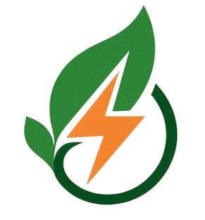

Hybrid heat approach
Biomass-based heat and solar-assisted heating are brought together in an indoor drying concept.
The initiatives I lead and the engineering, climate-tech and community projects I am developing.

FOUNDER & TEAM LEAD
A climate technology venture developing reliable crop-drying solutions for smallholder farmers.
For many smallholder farmers, drying is a critical step between harvest and market. When crops depend on open-air sun drying, unreliable weather, limited space and exposure to contamination can affect quality, timing and the value farmers receive.
Cassava is an important food and income crop in Uganda. Yet drying remains a practical bottleneck for farmers and processors seeking consistent quality and dependable market access.
Ecoflash is developing an indoor flash-drying approach that combines biomass heat from cassava waste with solar-assisted heating. The aim is to make drying less dependent on sunshine and to put agricultural residues to productive use.
The venture focuses on practical engineering, energy efficiency, user needs, fabrication and a business model that can work for local processors and farmer groups.
Biomass-based heat and solar-assisted heating are brought together in an indoor drying concept.
Designed to support consistency, product quality and reduced exposure to weather-related disruption.
Explores productive use of cassava waste as an energy resource within a more circular system.
Understand heat transfer, drying conditions, energy use and product quality through structured testing.
Design around the operating realities of farmers, processors, maintenance teams and local fabricators.
Develop a credible path across cost, production, service, partnerships and customer adoption.
FOUNDER & EXECUTIVE DIRECTOR
A youth-led platform advancing climate action, research and technology empowerment.
Young people across Northern Uganda and beyond have ideas, talent and a desire to solve problems. However, access to platforms, mentorship, networks and practical opportunities can be limited.
Innovate2day Societas exists to help close that gap by creating pathways for young people to learn, collaborate, experiment and participate in innovation.
The organisation focuses on climate action, research, technology empowerment and exposure to innovation ecosystems. It supports connections between young innovators, mentors, institutions and platforms where ideas can be tested.
Its work is grounded in the belief that youth participation should move beyond inspiration toward practical capability, confidence and contribution.
Encourage practical learning, curiosity, digital skills and problem-solving.
Connect young innovators with mentors, networks, competitions and opportunities.
Support collaboration and experimentation around challenges that matter.
Assess heat generation, transfer, distribution and control to support consistent drying conditions.
Consider air movement, moisture removal, chamber layout and the relationship between airflow and product quality.
Consider material durability, fabrication, cleaning, maintenance and safe operation.
Creating space for people to work together on problems using science, technology and open data.
I serve as Local Lead for the NASA International Space Apps Challenge, Lira local event in 2025 and 2026, supporting local participation and community engagement. The event brings participants together to explore NASA data, collaborate across disciplines and develop responses to global and local challenges.
The work includes ecosystem mobilisation, participant engagement, partner coordination and helping create an environment where emerging innovators can take part in a global challenge.
A project is not defined only by the promise of its idea. It is defined by the quality of its questions, the care of its execution and the evidence of what it achieves.
For partnerships, engineering conversations, climate innovation and opportunities worth exploring.
Get in touch ↗